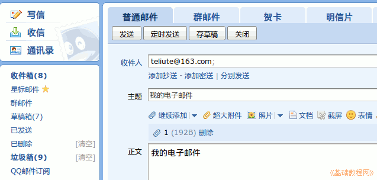

2014-2015 第一学期七年级文字处理和网页教学设计
作者：TeliuTe 来源：基础教程网
十五、学会发电子邮件 返回目录 下一课
（一）教学设计
1、学习目标：学会Ubuntu基本操作，校园网操作，中英文指法
2、注意事项：绕过弯来，既不要跳也不要落，一楼过了二楼
3、教学过程：
1）教师准备学案和板书；
2）学生整队进入，开机抄黑板上笔记；
3）教师讲解板书演示操作；
4）学生打指法、日志、完成操作；
5）教师打勾记录学生指法成绩，检查日志和操作；
注：学生抄完笔记就开始打指法、日志，老师讲完后再继续完成；
（二）板书设计(学生笔记)
第15课 学会发电子邮件
1.登陆qq，点信封的邮箱。
2.点写信，收件人，主题附件。
3.teliute@163.com操作任务。
4.添加附件，我的电子邮件，点发送
操作图示：

（三）课后记
--
2014-11-8 17:00
1.登录QQ,点小信封的邮件。
2.点写信，收件人，主题，附件，正文。
3.teliute@163,com,操作任务。
4.添加附件，我的电子邮件，点发送。
--
学生抄笔记的时候，就要求把词语分出来
讲一下日志打词语，不要打句子，词语打第一个字母即可
--
学习任务是学电子邮件，有四个步骤不要搞混了
强调别返工，中文输入法卡住的，让重新启动计算机
--
做的快的，输完去挣金币，把前面学的发投票，发帖子
留言板，打招呼，鲜花表态都复习一下，挣够50个金币
--
大概15分钟之内，讲一下操作，
先加个新标签，从书签里把QQ找出来，再进邮箱
进不去的检查连网的勾，把前面的返工一下
--
登录把换一个验证码讲一下，从左边“写信”，收件人
用复制粘贴，会提示安全，讲一下不要害怕，看提示粘贴
--
附件把第一课写在绿树叶的leafpad的保存为1的文档传上来
没有1的上传一个其他的文件，发到注册校园网用户的我的163邮箱里
--
比以前多了个附件，选择的时候，到主文件夹里，左边第三个小房子图标
学生没太多难度，就是找出界面后，忘记该做什么，问了让自己看笔记
--
总的来看做的很快，提前应该让把QQ注册一下，这是上网的第3课
学生光上网激动玩，让回家去注册，或者家长的手机注册
--
QQ聊天不用讲了 ，这个自学就会了，后面把论坛，把网上音乐、视频说一下
今天安全员值班，中午饭也没吃，吃了点青豆子，感觉有点饿的
返回目录 下一课
本教程由86团学校TeliuTe制作|著作权所有
基础教程网：http://teliute.org/
美丽的校园……
转载和引用本站内容，请保留作者和本站链接。